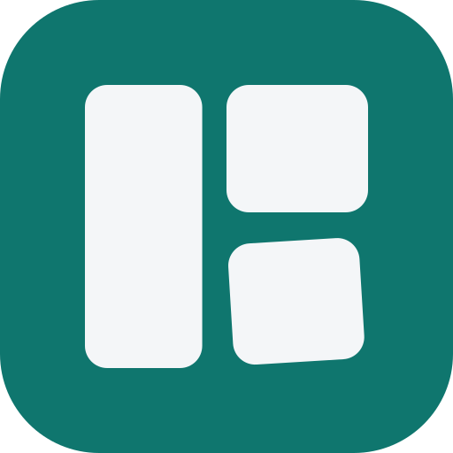
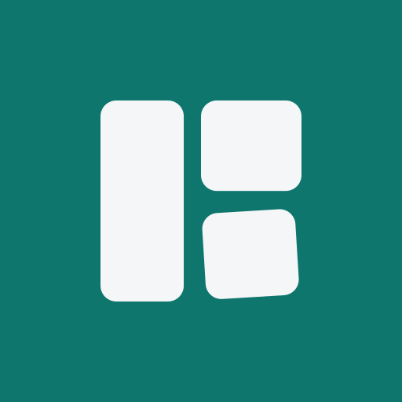

The mark is three cut panels nested on a stock sheet — the product, drawn literally. The bottom-right part is set down at a slight angle: precision, but placed by a person. Built entirely from the shipping product tokens (app.css); it drops into the existing shells with no re-theming.
app.css| Role | Family | Spec |
|---|---|---|
| Mebel Pro | Source Serif 4 | Display / wordmark · weight 600 · tracking -0.01em |
| Workshop · order #4821 | Hanken Grotesk | All UI text, navigation, labels · 400–800 |
| 2440×1830 · 24 600 UZS | JetBrains Mono | IDs, dimensions, prices, counts · 500 / 700 |
No fourth typeface. The wordmark is set in Source Serif 4 600 with -0.01em tracking — never re-typeset it in Hanken Grotesk or any other face.


Solid rust ground, mark knocked out in paper, flat at every tile size (no gradient, no tilt-jitter). The maskable variant is full-bleed with the mark held inside the central 50% safe zone so platform circle/squircle masks never clip it.
A single vertical #A6471F → #8C3814 on the symbol's panel fills — on-paper symbol & horizontal/stacked on-paper lockups only. Every other context is flat: on-dark, both mono variants, and all icon-tile sizes. Never introduce a second gradient, glow, or shadow on the mark.
<head><!-- replaces the placeholder favicon; same-origin paths --> <link rel="icon" href="/favicon.svg" type="image/svg+xml"> <link rel="icon" href="/favicon.ico" sizes="32x32"> <link rel="apple-touch-icon" href="/apple-touch-icon-180.png"> <link rel="manifest" href="/site.webmanifest"> <meta name="theme-color" content="#FAF7F2"> site.webmanifest: { "name": "Mebel Pro", "short_name": "Mebel Pro", "theme_color": "#FAF7F2", "background_color": "#FAF7F2", "display": "standalone", "icons": [ { "src": "/icon-192.png", "sizes": "192x192", "type": "image/png" }, { "src": "/icon-512.png", "sizes": "512x512", "type": "image/png" }, { "src": "/maskable-512.png", "sizes": "512x512", "type": "image/png", "purpose": "maskable" } ] }